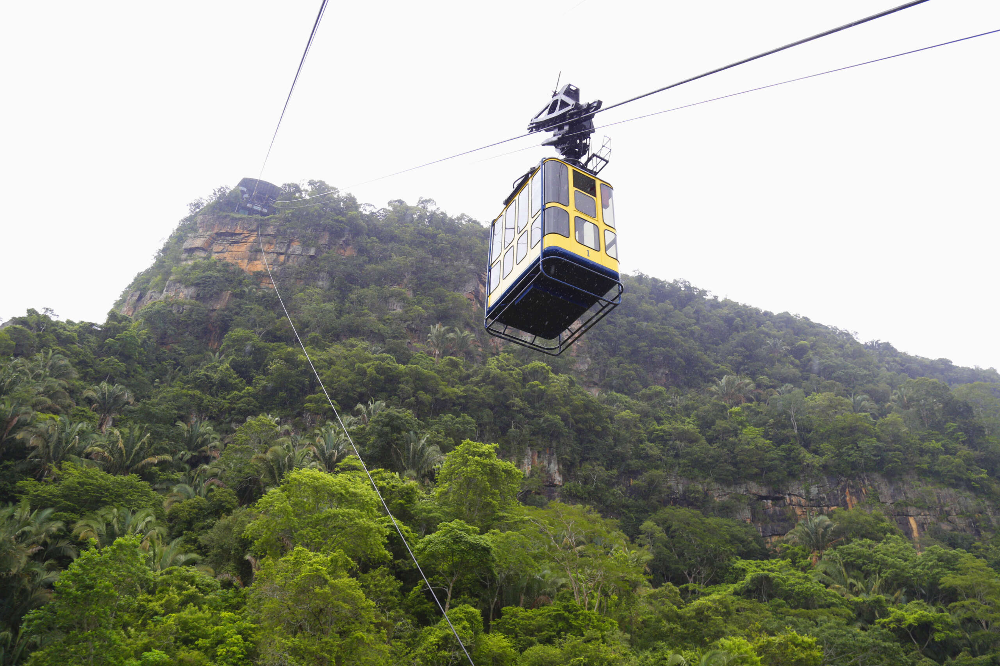
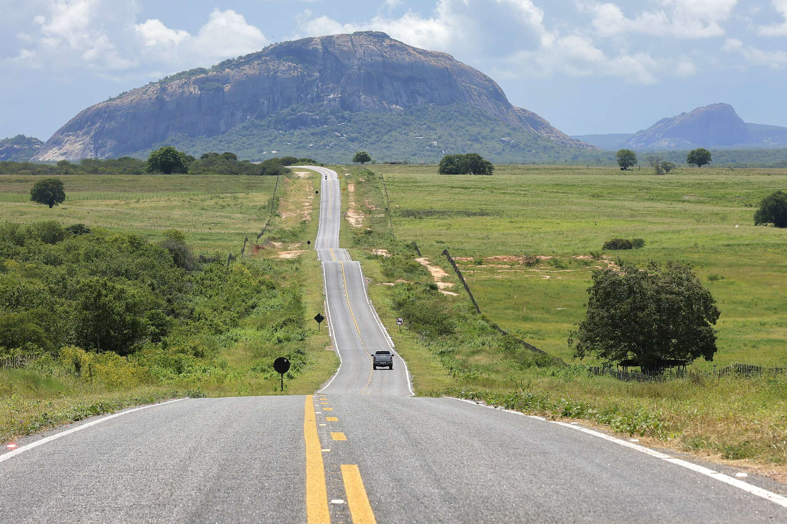

Ceará Natural: Aventuras Verdes e Preservação
Explore a biodiversidade exuberante do Ceará, de trilhas em serras a paisagens intocadas, e conecte-se com a natureza.

Sol, Mar e Dunas: As Praias Paradisíacas do Ceará
Relaxe nas areias douradas, mergulhe em águas cristalinas e desfrute da brisa do mar nas deslumbrantes praias cearenses.

Ceará Aventura: Adrenalina em Cenários Espetaculares
Para os amantes de emoção, o Ceará oferece esportes radicais em terra, mar e ar, com paisagens que tiram o fôlego.

Fé e Devoção: Caminhos Sagrados no Ceará
Conheça os locais de peregrinação e os templos religiosos que contam a rica história de fé e cultura do povo cearense.

O Charme da Serra: Clima Agradável e Cultura Local
Descubra o clima ameno das serras cearenses, com suas cachoeiras, trilhas e a hospitalidade das comunidades locais.

Sertão Forte: Tradição e Beleza no Coração do Ceará
Aventure-se pelo sertão cearense, conhecendo a resiliência de seu povo, a riqueza de sua cultura e paisagens únicas.